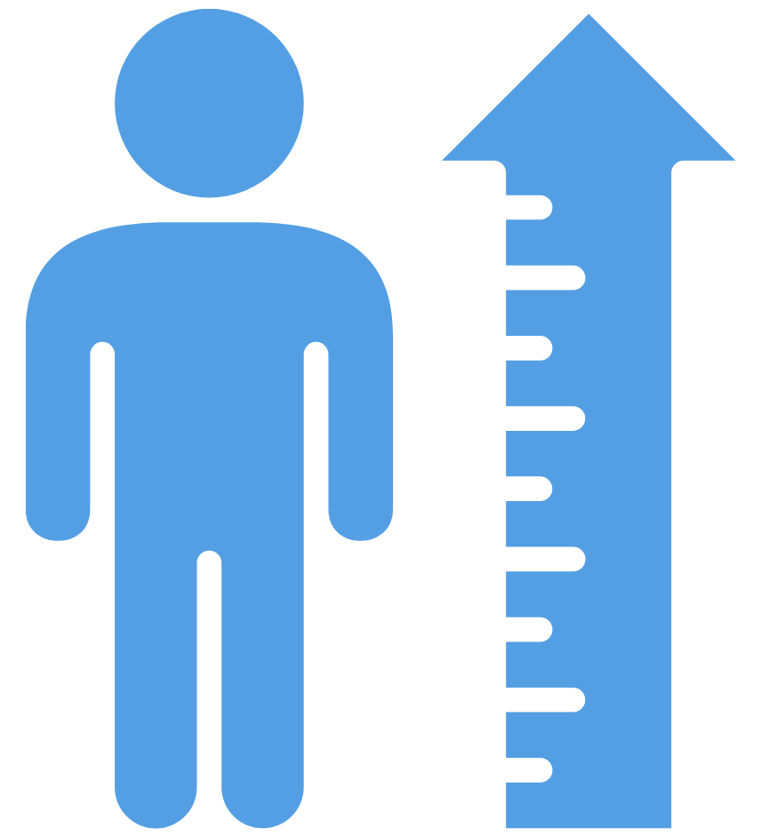
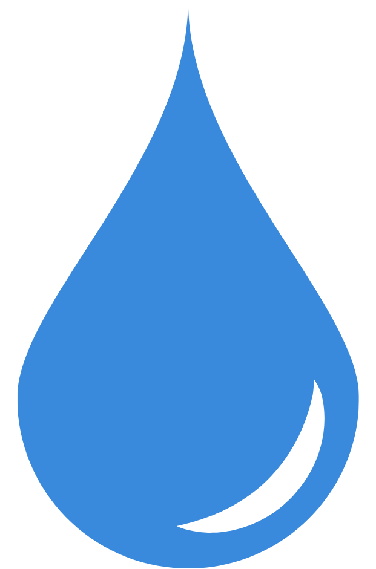

Tăng cường miễn dịch
- Colosferrin
- Lactoferrin
- IgG
- Vitamin và khoáng chất
Hỗ trợ xây dựng nền tảng miễn dịch và nâng cao sức đề kháng cho từng nhóm đối tượng.
Nghiên cứu & Dinh dưỡng
Khoa học dinh dưỡng tạo nền tảng cho sản phẩm chất lượng
AMM nghiên cứu và phát triển các giải pháp dinh dưỡng dựa trên cơ sở khoa học, xu hướng thị trường và nhu cầu thực tế của từng nhóm người tiêu dùng.
Từ lựa chọn nguyên liệu, xây dựng công thức đến đánh giá khả năng ứng dụng trong sản xuất, mỗi giải pháp đều được phát triển theo định hướng an toàn, hiệu quả và có khả năng thương mại hóa.
Năng lực nghiên cứu ứng dụng
Hệ giải pháp được phát triển theo từng nhu cầu sức khỏe, đối tượng sử dụng và định hướng sản phẩm.
Hỗ trợ xây dựng nền tảng miễn dịch và nâng cao sức đề kháng cho từng nhóm đối tượng.
Hỗ trợ cân bằng hệ vi sinh đường ruột và nâng cao khả năng hấp thu dinh dưỡng.

Hỗ trợ phát triển hệ xương, duy trì mật độ xương và tối ưu khả năng tăng trưởng.
Hỗ trợ phát triển não bộ, thị giác và khả năng nhận thức ở từng giai đoạn.
Cung cấp nền tảng dinh dưỡng cân đối, hỗ trợ tăng cân và phát triển thể chất.
Phát triển giải pháp phù hợp cho sản phẩm cần kiểm soát năng lượng và đường huyết.

Quy trình khoa học
Mỗi giải pháp được phát triển theo quy trình có hệ thống, từ xác định nhu cầu đến đánh giá khả năng ứng dụng trong sản xuất.
Làm rõ nhóm sản phẩm, đối tượng sử dụng, lợi ích dinh dưỡng và định vị thương hiệu.
Phân tích nhu cầu dinh dưỡng, thói quen sử dụng và xu hướng của thị trường mục tiêu.
Lựa chọn dựa trên tính khoa học, nguồn gốc, độ an toàn và khả năng ứng dụng.
Phối hợp tỷ lệ thành phần, điều chỉnh chỉ tiêu và tối ưu đặc tính cảm quan.
Đánh giá sự phù hợp với dây chuyền, quy trình công nghệ và tiêu chuẩn chất lượng.
Khả năng ứng dụng
Các giải pháp dinh dưỡng của AMM có thể được ứng dụng linh hoạt trên nhiều nhóm sản phẩm khác nhau.
Nền tảng đồng hành
Đồng hành từ khâu xác định nhu cầu đến xây dựng và hoàn thiện giải pháp.
Ưu tiên nguyên liệu có nguồn gốc rõ ràng, dữ liệu khoa học và khả năng ứng dụng cao.
Giải pháp được xây dựng phù hợp với điều kiện công nghệ và dây chuyền thực tế.
Tùy chỉnh công thức theo nhóm khách hàng, mức giá, phân khúc và chiến lược sản phẩm.
AMM đồng hành cùng doanh nghiệp kiến tạo giá trị dinh dưỡng và nâng tầm thương hiệu.